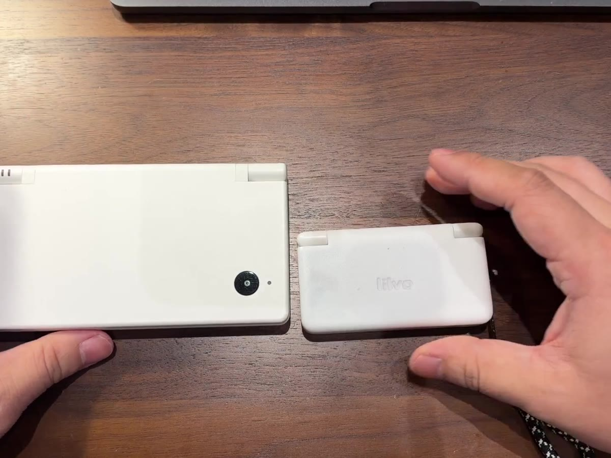
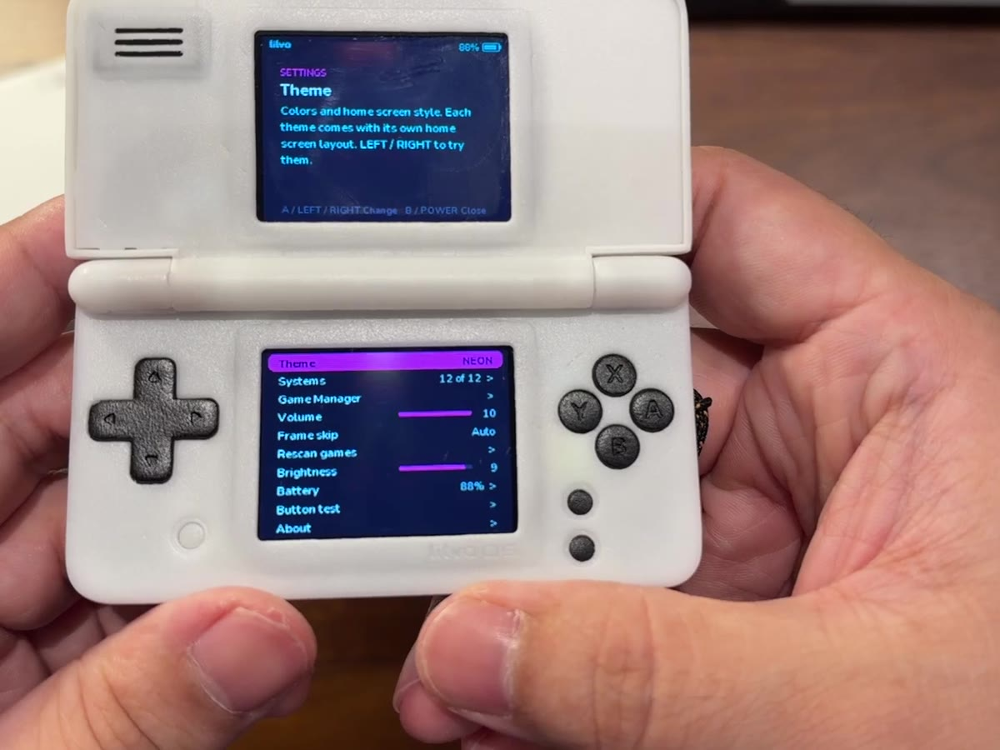
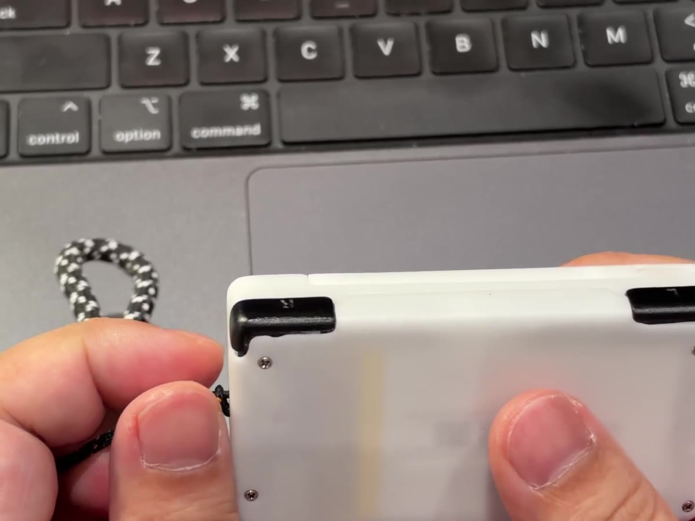

The first fully working one
I've had a working prototype in my pocket for a couple of weeks, but it wasn't complete: no L / R, no headphones. I didn't want to post until I had one where everything works. Today I do. It's hand-assembled and the shell is rough, but it's the first DS Micro I can just pick up and play.
What's in it
- The new main board (RevD.8). Getting it to boot took a week, see the board post.
- Working L and R. The first boards didn't have shoulder buttons at all.
- The lid is read by the system. A magnet sensor tells the system the lid is closing, so it can save and quit the game first. The hardware cuts the power a few seconds later no matter what.
- Headphones and speaker, both clean, no background hiss.
- A white shell, sanded and fitted by hand.
Both screens are exactly 256 × 192
The screens are small smartwatch panels with a slightly higher resolution and rounded corners. The shell only shows a 256 × 192 window of each, and the system only lights that area. So DS games are shown pixel for pixel, like on the original.


What's still not right
- Volume. Fine in a quiet room, too quiet anywhere else. I want to double the maximum volume in the next hardware round.
- Headphone detection. The hardware sees the plug, but the system can't read it yet. For now Fn + L switches between speaker and headphones.
- L / R feel. They work, but the travel is too short. The next shell gives them about 1.5 times more.
- The shell. Visible lines, a hole next to the headphone jack that shouldn't be there, and a separate little hinge cap that I never liked.

What's next
The next shell is about assembly. The whole hinge (both lid halves, the spring and the pin) drops in from the back and is held by one cover that snaps in, instead of a separate cap on each end. Start, Select and POWER stand a little taller, and L / R get more travel. Whether this ends up made in a factory or printed by people at home, it has to be easy to put together.